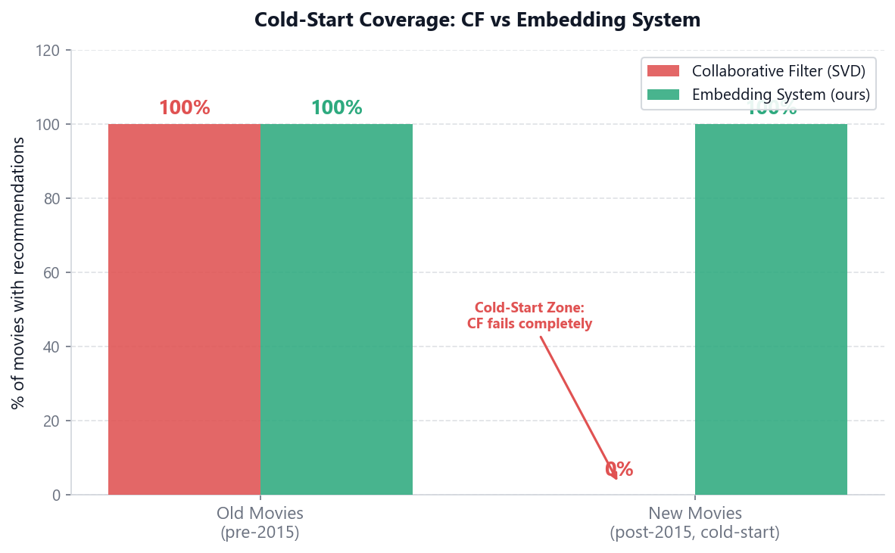
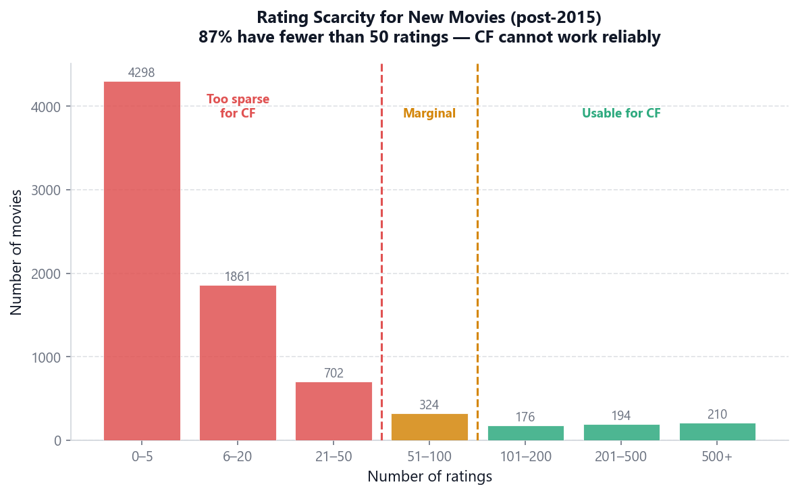
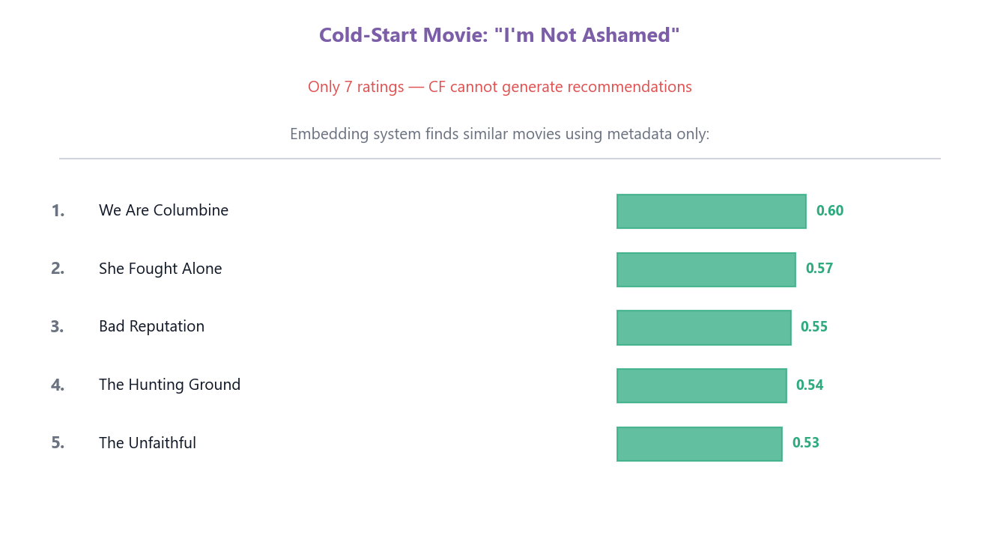

Embedding-based recommender that solves the item cold-start problem — recommending new content before any user interaction data exists. Benchmarked against SVD collaborative filtering on MovieLens 25M: CF covers 0% of new movies; the embedding system covers 100%. Claude Sonnet enhances natural language queries and explains recommendations. Built with Sellpy-style second-hand catalogues in mind — every new listing is cold-start by definition.
sentence-transformers all-MiniLM-L6-v2 FAISS · 7ms Claude Sonnet MovieLens 25M · 25M ratings SVD CF baseline 44,937 movies · TMDB
CF vs Embedding coverage on old and new movies

Rating scarcity distribution for post-2015 movies

Example: cold-start movie with only 7 ratings — embedding neighbours found via metadata
| Property | SVD Collaborative Filter | Embedding System (ours) |
|---|---|---|
| Training data required | Millions of user-item interactions | Item metadata only |
| New item coverage | 0% — item must be in training matrix | 100% — works from day one |
| Recommendation latency | Fast (dot product on learned factors) | 7ms (FAISS cosine search) |
| Explainability | None — latent factors are opaque | Claude generates natural language explanation |
| Query enhancement | Not applicable | Claude expands vague queries (+13% similarity) |
| Domain transfer | Requires new interaction data per domain | Any text metadata catalogue — plug and play |